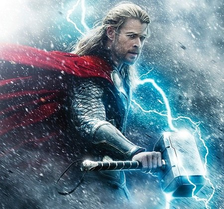
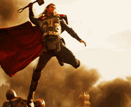

Quem foi THOR?
Thor foi o deus mais popular da religiosidade dos nórdicos, povo que habitava o norte da Europa. O auge da
adoração a esse deus se deu no período conhecido como Era Viking, que se estendeu de 793 a 1066. Thor era
reconhecido como o deus do trovão, do céu, das tempestades e da agricultura.
Esse deus era tido pelos nórdicos como o protetor de Midgard, nome pelo qual eles se referiam à Terra, e
também de Asgard, a morada dos deuses. Era também conhecido por ser um matador de gigantes e era filho de
Odin, o deus tido como pai de todos. Sua mãe se chamava Jörd. Thor era uma divindade nórdica que teve origem
na cultura germânica e derivava do deus Donar, também conhecido como deus do trovão.
Thor possuía um acessório muito importante que estavam com ele a todo momento:
Martelo Mjölnir
 
Acesse o site para saber mais: aqui